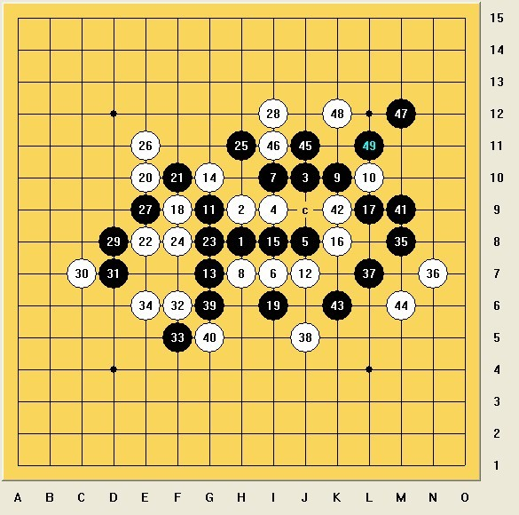
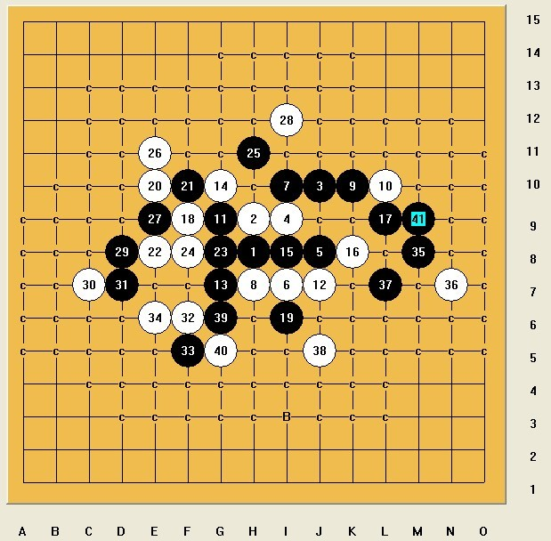
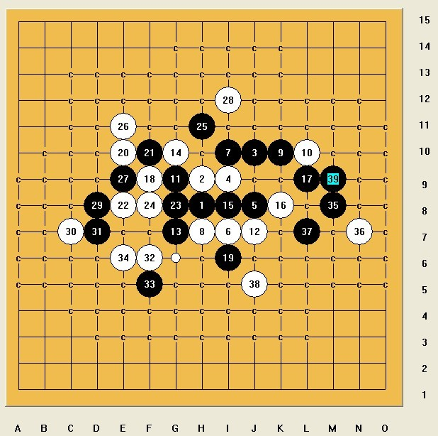
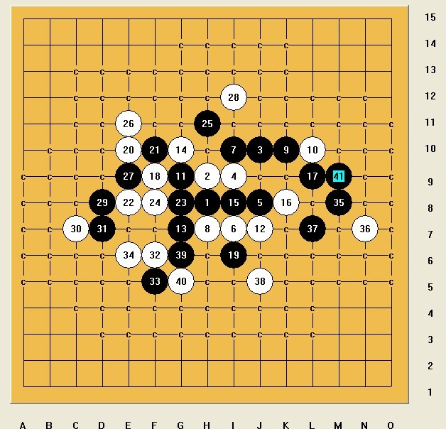
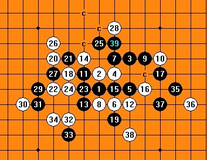

黑杀
首页
茗弈阁
#1 黑杀 作者：茗弈宽容 发表时间：2012-6-5 11:37:23
#2 Re:黑杀 作者：三道 发表时间：2012-6-5 12:53:32
#3 Re:黑杀 作者：三道 发表时间：2012-6-5 12:54:21
#4 Re:黑杀 作者：三道 发表时间：2012-6-5 12:56:46
［ 茗弈宽容 于 2012-6-5 13:12:58 时花20金币送鲜花一朵］
［ 茗弈宽容 于 2012-6-5 13:13:01 时花20金币送鲜花一朵］
［ 茗弈宽容 于 2012-6-5 13:13:03 时花20金币送鲜花一朵］
#5 Re:黑杀 作者：茗弈宽容 发表时间：2012-6-5 13:11:49
这2个46呢？ ［ 空恨社小仙 于 2012-6-5 15:35:56 时花20金币送鲜花一朵］
#6 Re:黑杀 作者：三道 发表时间：2012-6-5 13:19:59
#7 Re:黑杀 作者：三道 发表时间：2012-6-5 13:21:10
#8 Re:黑杀 作者：三道 发表时间：2012-6-5 13:23:32
第二个有反。。
#9 Re:黑杀 作者：一次一个号 发表时间：2012-6-5 13:57:48
顺序换下就行了［ 茗弈宽容 于 2012-6-5 14:22:00 时奖励此帖[金币加 100 威望加1］
#10 Re:黑杀 作者：三道 发表时间：2012-6-5 14:18:16
怎么换顺序
#11 Re:黑杀 作者：茗弈宽容 发表时间：2012-6-5 14:25:07
9楼朋友威望0+1.
6.7楼都杀不掉啊。
［ 空恨社小仙 于 2012-6-5 15:37:50 时花20金币送鲜花一朵］
#12 Re:黑杀 作者：茗弈宽容 发表时间：2012-6-5 14:26:23
黑前边有没有更好的下法呢？33手或35手？
#13 Re:黑杀 作者：三道 发表时间：2012-6-5 14:36:45
［ 茗弈宽容 于 2012-6-6 18:15:00 时奖励此帖[金币加 100 威望加1］
#14 Re:黑杀 作者：拈棋居 发表时间：2012-6-5 14:58:22
39地毯，我不会发谱
#15 Re:茗弈宽容【==黑杀==】 作者：拈棋居 发表时间：2012-6-5 15:00:13

这一路是最强，其余很简单。有问题可联系我
#16 Re:茗弈宽容【==黑杀==】 作者：拈棋居 发表时间：2012-6-5 15:18:22

不好意思，因为白下面的活三给黑棋后面的VCT 造了一个长连，我忽略了，因为马上要上课去，回来再来拆，不好意思，打扰了。因为32,34的活二，让这个棋有点纠结，我的思路先冲掉，还是给白棋一点东西了。有时间了再拆。。。上课去了
［此帖子已被 拈棋居 在 2012-6-5 15:27:17 编辑过］
［此帖子已被 拈棋居 在 2012-6-5 15:28:45 编辑过］
#17 Re:拈棋居【==Re:茗弈宽容【==黑杀==】==】一楼的40这样是可以杀的,不知道对不对,大家验 作者：空恨社小仙 发表时间：2012-6-5 15:51:16
] 000.rar
000.rar［此帖子已被 空恨社小仙 在 2012-6-5 15:52:57 编辑过］
#18 Re:黑杀 作者：拈棋居 发表时间：2012-6-5 17:21:38

下课回来，完全地毯。
#19 Re:黑杀 作者：拈棋居 发表时间：2012-6-5 17:23:32
39的必胜.rar
如果有BUG请回复下，我会修改。晚上还有课要上，我就不一一查看了。
#20 Re:空恨社小仙【==Re:拈棋居【==Re:茗弈宽容【==黑杀==】==】一楼的40这样是可以杀的,不知道对不对,大家验==】 作者：拈棋居 发表时间：2012-6-5 17:40:39
个人觉得13下面是一个要点，可以连接右边的棋，做VCT，如果白棋40先手活掉这个点，44直接切断上下的联系，这样是否能杀？
我的思路39冲四占了那个连接的点，然后右边做棋，白棋无防，刚下课回来用了一点时间，完全地毯了，到此，39我觉得没有问题，可能存在更秒的必胜的39，我就不再分析了，我现在想知道的是哪一手白棋的问题，38？或者更加前面？偶6点半上课。先闪了，等下回来，看看大师们的见解。
［ 茗弈宽容 于 2012-6-6 18:12:00 时奖励此帖[金币加 100 威望加1］
#21 Re:黑杀 作者：三道 发表时间：2012-6-5 19:35:06
少冲了个4
用黑石验算了下，杀不了。晕。
［此帖子已被 三道 在 2012-6-5 19:42:19 编辑过］
#22 Re:三道【==Re:黑杀==】 作者：空恨社小仙 发表时间：2012-6-5 21:06:31
不管什么顺序,冲四必须,不然白活三之后就难搞了..
#23 Re:茗弈宽容【==Re:黑杀==】 作者：空恨社小仙 发表时间：2012-6-5 21:08:41
我以为楼主只是出个习题让大家杀一下这个40手的,木有想到去找个必胜的39
［ 茗弈宽容 于 2012-6-6 18:12:52 时奖励此帖[金币加 100 威望加1］
#24 Re:空恨社小仙【==Re:茗弈宽容【==Re:黑杀==】==】 作者：拈棋居 发表时间：2012-6-5 21:27:40
我看下下楼主问了前面有没有更好的点，呵呵。希望没有多此一举哈。小仙大师的 大刀 非常给力哦。
#25 Re:拈棋居【==Re:空恨社小仙【==Re:茗弈宽容【==Re:黑杀==】==】==】 作者：空恨社小仙 发表时间：2012-6-6 0:21:35
 哪里哪里,如此好的必胜39怎么能说多此一举....
哪里哪里,如此好的必胜39怎么能说多此一举....
#26 Re:黑杀 作者：自来水 发表时间：2012-6-6 8:35:06
 VCT啊，现在计算弱爆了
VCT啊，现在计算弱爆了
［此帖子已被 自来水 在 2012-6-6 8:36:14 编辑过］
［ 空恨社小仙 于 2012-6-6 14:18:54 时花20金币送鲜花一朵］
#27 Re:自来水【==Re:黑杀==】 作者：空恨社小仙 发表时间：2012-6-6 14:18:23
 异曲同工啊,和我的杀法也差不多...你是用活三先防了白活二,我是直接冲四防白活二,关键就是不能让白下面出现活三....
异曲同工啊,和我的杀法也差不多...你是用活三先防了白活二,我是直接冲四防白活二,关键就是不能让白下面出现活三....
#28 Re:黑杀 作者：茗弈宽容 发表时间：2012-6-6 18:17:46
很强悍啊 几位大师！
几位大师！
［ 空恨社小仙 于 2012-6-6 22:01:39 时花20金币送鲜花一朵］
#29 Re:茗弈宽容【==Re:黑杀==】昨天把这个习题拿出来复习一下,居然38手黑就直接能vct了! 作者：空恨社小仙 发表时间：2012-7-11 19:10:27

#30 Re:三道【==Re:黑杀==】 作者：兔子哥哥 发表时间：2012-7-12 0:15:07
这个顺序错了吧，43应该先冲四把
否则这样如何杀？应该这样才是正解
#31 Re:兔子哥哥【==Re:三道【==Re:黑杀==】==】 作者：空恨社小仙 发表时间：2012-7-12 5:52:37
嗯,冲四也好,黑先左面活三也行,挡了白下面的活二之后,都是一样杀的
#32 Re:黑杀 作者：极地剑客 发表时间：2012-7-15 7:47:06
终结者算39杀~倒是花了5秒出了29楼空空那个杀~
#33 Re:黑杀 作者：茗弈宽容 发表时间：2012-7-17 16:02:26
哇，好久米见到兔子哥哥了~